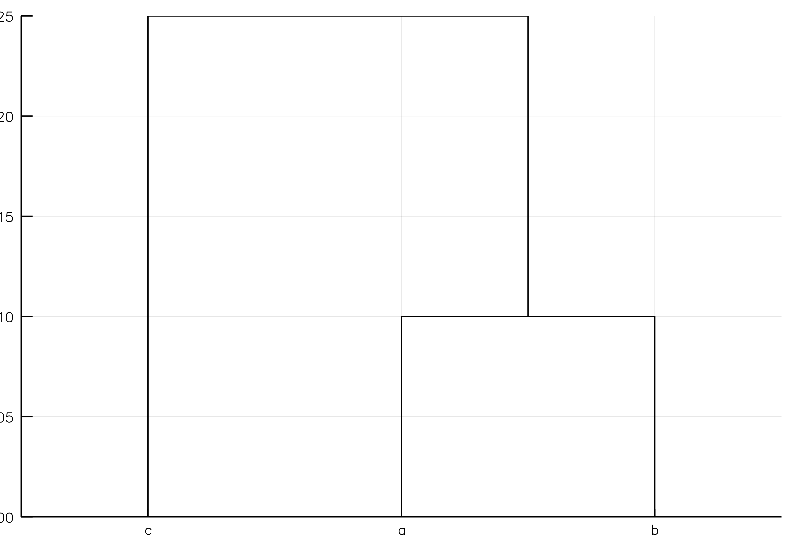

Working with Distances / Dissimilarity
Quite often, it's useful to boil stuff down to distances between samples. For this, I'm using an interface with Distances.jl to generate a symetric DistanceMatrix, which also contains a vector for samples, and a field specifying which type of distance was used to calulate it. You can load one in manually, or generate it from an AbundanceTable.
julia> using Distances
julia> using Microbiome
julia> abund = abundancetable([1 3 0;
4 8 3;
5 0 4]);
julia> dm = getdm(abund, BrayCurtis())
3×3 Microbiome.DistanceMatrix{Float64}:
0.0 0.52381 0.176471
0.52381 0.0 0.666667
0.176471 0.666667 0.0I've also implemented a method to do a principle coordinates analysis. If necessary, you can include correct_neg=true to use the correction method described in Lingoes (1971)
julia> p = pcoa(dm)
3×2 Microbiome.PCoA{Float64}:
-0.251198 0.776895
0.79841 -0.170903
-0.547212 -0.605992
julia> eigenvalue(p, 2)
0.0050620487880063784
julia> principalcoord(p, 1)
3-element Array{Float64,1}:
-0.251198
0.79841
-0.547212
julia> variance(p, [1,2])
2-element Array{Float64,1}:
0.979751
0.0202492Plotting
Some convenience plotting types are available using RecipesBase.
julia> using StatPlots
julia> abund = abundancetable(
rand(100, 10),
["sample_$x" for x in 1:10],
["feature_$x" for x in 1:100]);
julia> dm = getdm(abund, BrayCurtis());
julia> p = pcoa(dm, correct_neg=true);
julia> plot(p, title="Random PCoA")
Optimal Leaf Ordering
I've also provided a plotting recipe for making treeplots for Hclust objects from the Clustering.jl package:
julia> using Clustering
julia> dm = [0. .1 .2
.1 0. .15
.2 .15 0.];
julia> h = hclust(dm, :single);
julia> h.labels = ["a", "b", "c"];
julia> hclustplot(h)
Note that even though this is a valid tree, the leaf a is closer to leaf c, despite the fact that c is more similar to b than to a. This can be fixed with a method derived from the paper:
julia> optimalorder!(h, dm)
julia> hclustplot(h)